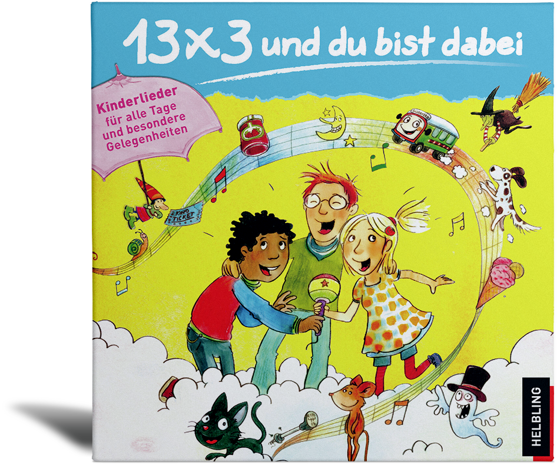

|

|
Gefallen Euch die Lieder?
20 mitreißende Kinderlieder von Ruth Schneidewind sind auch auf CD erhältlich.
Jetzt bestellen auf www.helblingmusik4kids.de!
Abenteuer, Alltag, Freundschaften und Träume – das sind die Themen, die die Wiener Musikpädagogin und Liedermacherin Ruth Schneidewind in ihren Liedern aufgreift und damit eine große Fangemeinde erreicht. Auch die 20 Kinderhits erzählen – mal lustig, mal nachdenklich – direkt aus der Lebendwelt der Kinder. Der CD liegt ein farbig gestaltetes Booklet mit allen Liedtexten bei. Für Kinder ab 4 Jahren empfohlen.